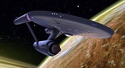

USS Enterprise (NCC-1701)
|
|
This article needs additional citations for verification. (August 2007) |
|
 The USS Enterprise |
|
| First appearance | "The Cage" (1965) |
|---|---|
| Affiliation |
United Federation of Planets Starfleet |
| Launched | 2245 |
| General characteristics | |
| Class | Constitution |
| Registry | NCC-1701 |
| Maximum speed |
Warp 6 (safely) Warp 8 (cruising speed) Warp 9 (at extreme risk)[1] |
| Auxiliary craft | Shuttlecraft |
| Armaments |
Photon torpedoes Phasers |
| Defenses | Deflector shields |
| Propulsion |
Impulse engines Warp drive |
,_ENT1231.jpg){kind=link}
The USS Enterprise (NCC-1701) is a fictional starship in the Star Trek media franchise. The original Star Trek series depicts her crew's mission "to explore strange new worlds; to seek out new life and new civilizations; to boldly go where no man has gone before" under the command of Captain James T. Kirk. The ship's basic design "formed the basis for one of sci-fi's most iconic images".[2] A refit version of the ship appears in the first three Star Trek films. The 2009 Star Trek film, which takes place in an "alternate, parallel" timeline,[3] includes an oversized and redesigned version of the Enterprise.
Contents |
[edit] Origin and design
[edit] Television series
Star Trek art director Matt Jefferies designed the original Enterprise, which in series creator Gene Roddenberry's first series outline drafts was named Yorktown.[4] Jeffries' experience with aviation led to his Enterprise designs being imbued with what he called "aircraft logic".[5] The ship's "NCC-1701" registry number stemmed from "NC" being one of the international aircraft registration codes assigned to aircraft registered in the United States; the second "C" was added for differentiation. The "1701" was chosen in order to avoid any possible ambiguity (according to Jefferies himself, the numbers 3, 6, 8 and 9 are "too easily confused"[6]). Other sources cite it as a reference to the house across the street from where Roddenberry grew up,[7] while another account gives it as the street address of Linwood Dunn.[8] Jefferies' own sketches provide the explanation that it was his 17th cruiser design with the first serial number of that series: 1701.[9]The Making of Star Trek, however, specifically states that "NCC" stands for "Naval Construction Contract".[10]
{kind=link}
The first miniature built for the pilot episode "The Cage" (1965) was unlit and approximately 3 feet (90 cm) long. It was modified during the course of the series to match the changes eventually made to the larger miniature, and appears on-set in "Requiem for Methuselah" (1969). The second miniature built for the first pilot measures 11 feet 2 inches (3.40 m) long and was built by a small crew of model makers, Volmer Jensen, Mel Keys, and Vernon Sion, and supervised by Richard Datin, working out of Jensen's model shop in Burbank, California. It was initially filmed by both Howard A. Anderson and Linwood G. Dunn at Dunn's Film Effects of Hollywood facility, who also re-filmed later more-elaborate models of the ship, generating a variety of stock footage that could be used in later episodes.
Initially, the model was static and had no electronics. For the second pilot, "Where No Man Has Gone Before" (1966), various details were altered, and the starboard window ports and running lights were internally illuminated. When the series was picked up and went into production, the model was altered yet again. These alterations included the addition of translucent domes and blinking lights at the forward ends of the engine nacelles, smaller domes at the stern end of the engine nacelles, a shorter bridge dome, and a smaller deflector/sensor dish. Save for re-used footage from the two pilot episodes, this was the appearance of the ship throughout the series. The 11-foot model stands in the Gift Shop downstairs at the Smithsonian Institution's National Air and Space Museum in Washington, D.C.[11]
Greg Jein created a model of the original Enterprise for the Star Trek: Deep Space Nine episode "Trials and Tribble-ations" (1996). Jein's model was built to be exactly half the size of the larger of the two original models, and later appeared in the 1998 Star Trek wall calendar. In addition, a CGI model of the ship makes a brief cameo appearance at the end of the final episode of Star Trek: Enterprise, "These Are the Voyages..." (2005), and another CGI version was created for remastered episodes of the original Star Trek, based on the model in the Smithsonian.
[edit] Film refit
The "refit" Enterprise that appears in the first three Star Trek films was designed by Mike Minor, Joe Jennings, Andrew Probert, Douglas Trumbull, Harold Michaelson, and Richard Taylor,[4][12] all based on conceptual sketches done by Jeffries for the never-filmed Star Trek: Phase II TV series. The 8-foot (244 cm) model was re-used as the USS Enterprise-A in the fourth, fifth, and sixth Star Trek movies. Foundation Imaging created a CGI model of the ship for the "Director's Edition" release of Star Trek: The Motion Picture to add footage envisaged but never shot by director Robert Wise.
[edit] 2009 Star Trek film
The Enterprise was redesigned for the 2009 Star Trek movie. Director J. J. Abrams wanted the Enterprise to have a "hot rod" look while retaining the traditional shape, but otherwise afforded Industrial Light & Magic (ILM) "tremendous" leeway in creating the ship.[13] Concept artist Ryan Church's initial designs were further refined and developed into photo-realistic models by Alex Jaeger's team at ILM.[14] ILM's Roger Guyett recalled the original Enterprise being "very static", and added moving components to the film's model.[13] ILM retained subtle geometric forms and patterns to allude back to the original Enterprise.[13] The computer model's digital paint recreates the use of "interference paint", which contains small particles of mica to alter the apparent color, used on the first three films' model.[13]
[edit] Depiction
Built between 2243 and 2245, Starfleet commissioned the USS Enterprise in 2245.[15] In Star Trek, the ship's dedication plaque lists it as "Starship Class"; later Expanded Universe and episode dialogue establish the vessel as a Constitution-class starship. The ship's components were built at the Starfleet Division of the San Francisco Navy Yards and assembled in orbit.[10]
Star Trek: The Animated Series and novels by Diane Carey state that Robert April is the Enterprise's first commanding officer. Captain Christopher Pike (Jeffrey Hunter) commanded the Enterprise for a decade, and Pike is the commanding officer in "The Cage". Throughout Star Trek, Captain Kirk commands the ship on a five-year mission of exploration. The vessel undergoes an 18-month refit overseen by its new commanding officer, Willard Decker (Stephen Collins), prior to the events in The Motion Picture (1979); Decker describes the refit vessel to Admiral Kirk, who assumes command, as "an almost totally new Enterprise". Star Trek novels depict another exploratory mission under Kirk's command between the events of the first and second films.
Spock (Leonard Nimoy) commands the Enterprise, serving as a training ship, at the beginning of Star Trek II: The Wrath of Khan (1982), but Kirk assumes command when the ship investigates problems with Project Genesis. The USS Reliant, hijacked by Khan Noonien Singh (Ricardo Montalbán), inflicts substantial damage to the Enterprise; Spock sacrifices his life to save the ship. Shortly after returning to spacedock at the beginning of Star Trek III: The Search for Spock (1984), the Enterprise is marked for decommissioning. Kirk leads his officers in stealing the ship in an attempt to restore Spock's life, and Kirk is forced to destroy the Enterprise to even the odds and gain a tactical advantage in a battle against Klingons. Star Trek IV: The Voyage Home (1986) opens with Kirk and his officers agreeing to return to Earth to face judgment for their actions in the previous film. En route, they travel back in time to stop a probe threatening to destroy Earth. Upon the success of their mission and return to the 23rd century, the charges against the crew are dismissed. Admiral Kirk is "punished" with a demotion in rank to captain and is given command of the Enterprise's successor, the USS Enterprise, NCC-1701-A.
[edit] Alternate reality
{kind=link}
In the 2009 film Star Trek, in 2255, the Enterprise is still under construction in Riverside, Iowa. Captain Christopher Pike (Bruce Greenwood) commands the Enterprise on its maiden voyage, in 2258, to respond to a distress call from Vulcan. The Romulan Nero (Eric Bana) captures Pike, and command shifts to Spock (Zachary Quinto). James T. Kirk (Chris Pine) shows that Spock is emotionally compromised by his homeworld's destruction and assumes command. Kirk and Spock rescue Pike and thwart Nero's plan to destroy Earth with a devastating weapon called red matter, the same weapon that destroyed Spock's homeworld. At the film's conclusion, Kirk is promoted to captain and receives command of the Enterprise, with Spock as first officer.
[edit] Cultural impact
- A write-in campaign led to the first space shuttle being named Enterprise rather than Constitution.[16]
- Because of the efficiency of its style and layout, the Enterprise's bridge design was once considered for use by the United States Navy.[17]
- The original series-era Enterprise appears on a commemorative stamp released by the United States Postal Service.
- Virgin Galactic named its first commercial spaceship the VSS Enterprise in honor of the Star Trek vessel.[18]
- Vulcan, Alberta, created a 31-foot model starship inspired by Star Trek's Enterprise.[19]
- The operations aboard the Enterprise have been used as a metaphor for practices in human resources management.[20]
- A website was created in which a functional spacecraft with a layout like the Enterprise could be used as a fully functioning interplanetary craft, built with current technology in as little as twenty years.[21]
[edit] References
- ^ Star Trek: The Original Series, Season 3, Episode 58: The Paradise Syndrome
- ^ "The Enterprise Through The Ages". Empire. pp. 3. http://www.empireonline.com/features/photo/star-trek-enterprise-evolution/3.asp. Retrieved 2008-11-20.
- ^ Burr, Ty (2009-05-05). "Star Trek". The Boston Globe. pp. 1. http://www.boston.com/ae/movies/articles/2009/05/05/a_fresh_frontier/. Retrieved 2009-05-06.
- ^ a b Okuda, Michael; Denise Okuda and Debbie Mirek (1999). The Star Trek Encyclopedia. Pocket Books. ISBN 0-671-53609-5.
- ^ Robinson, Ben; Marcus Riley (2011-07-21). Star Trek: U.S.S. Enterprise: Haynes Manual. Simon & Schuster. pp. Forward. http://books.google.com/books?id=1DlgE6MS49AC&pg=PA8&dq=starship+enterprise&hl=en&sa=X&ei=OK8gT6LkIoa80QG7nJn5CA&ved=0CGYQ6AEwBw#v=onepage&q=starship%20enterprise&f=false.
- ^ Why NCC-1701?
- ^ Fine Scale Modeler, May 1998, page 8.
- ^ Magid, Ron. "ILM creates new universe of Effects for 'Star Trek Generations'". American Cinematographer, April 1995, p. 78.
- ^ Jefferies signed sketch: "17th CRUISER DESIGN, SERIAL No1 - 1701"
- ^ a b Whitfield, Stephen PE; Roddenberry, Gene (1968). The Making of Star Trek. New York: Ballantine Books. ISBN 0-345-31554-5. OCLC 23859.
- ^ "Original Starship Enterprise Model from the Star Trek TV Show". http://www.nasm.si.edu/visit/concessions/shops/enterprise.cfm. Retrieved 2009-04-21.
- ^ Tobias, Tracey (December 2001). "Redesigning the USS Enterprise NCC-1701". Star Trek: the Magazine (Fabbri Publishing) 2 (8): 85.
- ^ a b c d "How ILM came up with the new Enterprise for J.J. Abrams' Trek". Sci Fi Wire. 2009-04-17. http://scifiwire.com/2009/04/how-ilm-came-up-with-the.php. Retrieved 2009-04-21.
- ^ Plant, Bob (2009-07-23). "Church of Trek". Round 2 Models. http://www.round2models.com/articles/church-interview. Retrieved 2009-10-04.
- ^ "Enterprise, U.S.S.". http://www.startrek.com/startrek/view/library/ships/article/70377.html. Retrieved 2007-08-28.
- ^ NASA (2000). "Enterprise (OV-101)". National Aeronautics and Space Administration. http://www-pao.ksc.nasa.gov/kscpao/shuttle/resources/orbiters/enterprise.html. Retrieved November 28, 2007.
- ^ Whitfield, Stephen; Gene Roddenberry (09 1968). The Making of Star Trek. Ballantine Books.
- ^ "Virgin Galactic's Private Spaceship Makes First Crewed Flight". Space.com. 2010-07-29. http://www.space.com/news/virgin-galactic-spaceshiptwo-first-crewed-flight-100716.html.
- ^ "About Vulcan, Alberta's Star Ship FX6-1995-A". http://www.vulcantourism.com/about-vulcan-albertas-star-ship-fx6-1995-a.html. Retrieved 2010-07-29.
- ^ Effron, Marc; Marshall Goldsmith (2003-04-30). Human resources in the 21st century. John Wiley and Sons. http://books.google.com/books?id=FOuirRFVNTYC&pg=PA121&dq=starship+enterprise&hl=en&sa=X&ei=OK8gT6LkIoa80QG7nJn5CA&ved=0CEAQ6AEwAQ#v=onepage&q=starship%20enterprise&f=false.
- ^ "Spaceship Enterprise in 20 years? Beam me up!". http://www.msnbc.msn.com/id/47396187/ns/technology_and_science-space/#.T7B9UFL4TAM. Retrieved 2012-05-12.
{kind=link}
[edit] External links
- USS Enterprise (NCC-1701) at Memory Alpha (a Star Trek wiki)
- USS Enterprise (NCC-1701) (alternate reality) at Memory Alpha (a Star Trek wiki)
| Spacecraft named Enterprise |
|---|
| NASA Space Shuttle (1976–1985) • Virgin Space Ship (2009—) • Star Trek starships (Fictional) |
|
|||||||||||
|
|||||||||||||||||
|
||||||||||||||
|
||||||||||||||||||||||||||||||||||||||||||||||||||||||||||||||||||||||
|
||||||||